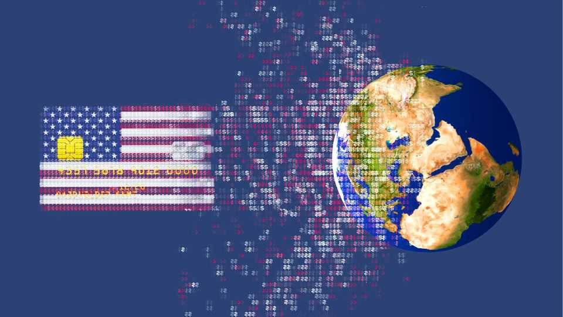
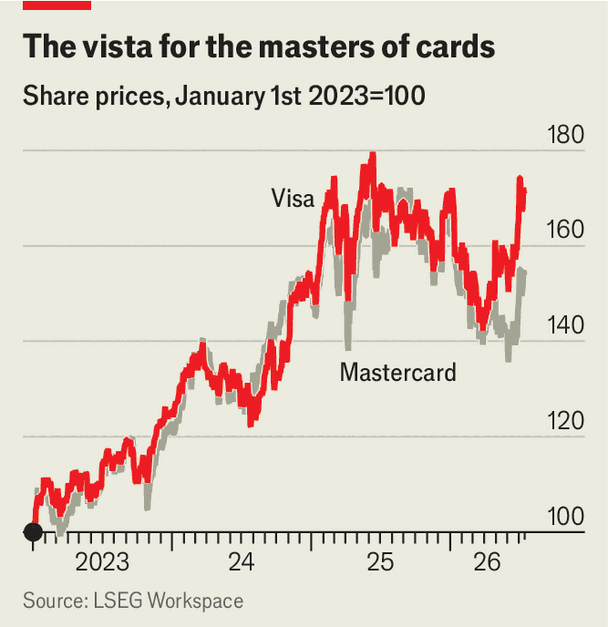

Storm clouds gather over America’s financial supremacy
Its payments firms may be the first casualties
July 16th 2026

LAST MONTH Jamieson Greer, America’s top trade official, complained that Pix, a Brazilian instant-payments system, unfairly disadvantages American firms such as Visa and Mastercard. America proposed an extra 25% tariff on Brazil in response. Yet Brazilians seem unmoved. “Pix is a Brazilian achievement and we will not give it up,” replied Luiz Inácio Lula da Silva, Brazil’s president and a frequent critic of American power. Even his right-wing rival, Flávio Bolsonaro, said he was unwilling to forgo the system, instead suggesting a compromise in which Brazil would promise not to link Pix to cross-border payment infrastructure that rivals America’s.
The episode captures the new geopolitical reality of global finance. As America pursues what Scott Bessent, the treasury secretary, recently described as “economic statecraft in the 21st century”, in which global access to the dollar and the American economy is “no longer unconditional”, and other countries try to respond in kind, the global financial system is splintering into regional and national systems. This is happening first in payments. It means a headache for Visa and Mastercard, the industry’s American duopoly.
In January Aurore Lalucq, chair of the European Parliament’s economic- and monetary-affairs group, warned that a hostile America could cut off access to payments infrastructure. “You won’t be able to say you weren’t warned,” she said, urging Europe to build its own alternatives. Weeks later a group of British bank bosses reportedly met in London to discuss building a British rival to Visa and Mastercard. “It’s important for all of us [to] have digital payment under our control,” echoed Christine Lagarde, president of the European Central Bank (ECB), in an interview.
Fear of Western-led payments systems used to be confined to places that have “fractious geopolitical relationships” with America, notes John Collison of Stripe, a payments firm. After American and European sanctions cut off Russia’s access to international payments infrastructure, the country shifted to its own messaging system (SFPS) and card network (Mir). China, too, has built cross-border infrastructure, through public initiatives and expansion of private giants like Alipay and WeChat Pay.
While much discussion has focused on the dollar’s role, policymakers now see payments infrastructure as a more viable path to independence. Xu Gao, an economist at Bank of China, a lender, argued in May that, rather than focusing on converting cross-border flows to yuan, China should prioritise “[securing] international payment channels” and “expanding the renminbi payment network globally”.
In this respect, China and Russia are no longer outliers. Today diversifying from America is “the ardent desire of policymakers in practically every country”, says Eswar Prasad of Cornell University.
One option for those looking to diversify the rails on which cross-border payments travel is to build native systems. Several European projects are speeding up after years of delays. The Single Euro Payments Area, a set of rails for euro-denominated payments, now counts 41 countries as members. A coalition of European banks and fintech firms have backed Wero, a digital-wallet system meant to integrate national fast-payments systems such as iDeal, a Dutch platform. “It’s simple, seamless and Made in Europe,” brags Wero’s site. The ECB also hopes to launch a central-bank issued digital euro by 2029.
An alternative is to shunt from American rails onto those of the other superpower. Bank of China has lately added dozens of countries to its digital-yuan system for cross-border exchanges, notes Josh Lipsky of the Atlantic Council, a think-tank. In March China’s Cross-Border Interbank Payment System, a rival to the Belgian-based, American-dominated SWIFT interbank network, carried a record 920bn yuan ($134bn) in average daily flows, 20% more than the same month last year. In April single-day transaction volume hit a new all-time high of 1.2trn yuan, according to FXC Intelligence, a data provider.
A third choice is to eschew international projects in favour of bilateral deals. United Payments Interface (UPI), India’s QR-code-based system, currently works in nine other countries, with several more in the process of joining. Ritesh Shukla of NPCI International, which runs UPI’s efforts abroad, says his team has “a rich road map” for further expansion, both through linking existing systems and helping countries build their own. “Our brand promises that we will make you sovereign, to fulfil your own domestic commitments and to drive your own national agenda,” he notes.
In the short run, insufficient liquidity in some currencies may limit the volume of transfers in other corridors, so the vast majority of payments will still touch American rails (or ones to which it has access). Eventually, innovations in digital money may mean many more retail payments can bypass incumbent channels entirely. But in the medium term, as Mr Prasad notes, bilateral and multilateral deals linking national payments systems like Pix and UPI may allow countries to shield significant flows from existing card and correspondent-banking systems.

This could hurt the American payments incumbents. The rise of “sovereign” systems, especially in Europe, a big source of Visa’s and Mastercard’s international business, could erode their enviable operating margins of over 50%. In their latest annual reports, both brought up “preferential” treatment of domestic payments systems as a risk to business. That may be one reason why investors have lately been lukewarm about the duopoly, despite healthy earnings. After a sustained rise starting in 2023, their share prices have been choppy in the past year (see chart).
Oliver Jenkyn, Visa’s president of global markets, says he has been travelling the world to reassure governments that the firm is sensitive to local concerns. In May the firm unveiled a €500m ($571m) investment in European infrastructure, including a technology centre in Poland set to open in 2027. In April its bosses said they were teaming up with UnionPay, a Chinese firm, to offer real-time payments in China.
Mastercard is also rushing to protect its business from geopolitical shifts. “A European payment network exists today operating for Europe’s benefit. That network is Mastercard,” wrote Kelly Devine, the president of Mastercard’s business on the continent, in 2025. To back up such claims, the firm is building three data centres in France at a cost of €250m, adding to the dozen it already has in Europe.
The turn towards sovereignty may cause problems for more than just card giants. The Financial Stability Board, an international group that has monitored cross-border progress, reckons that fragmentation will probably prevent the G20 group of large economies from achieving international payments goals—particularly faster and cheaper remittance payments—that it set out in 2020.
But the more serious risk, Mr Lipsky notes, is that countries’ pursuit of payments sovereignty may one day mean various regional systems become incompatible. That would increase financial fraud and sanctions evasion. It would also harm the global economy. A report sponsored by SWIFT (and compiled by Economist Enterprise, our sister company) estimates that, if current patterns continue, financial fragmentation could shave 2.6% off global GDP by 2030. Countries may find that the price of payments sovereignty is higher than they think. So may America.■
For more expert analysis of the biggest stories in economics, finance and markets, sign up to Money Talks, our weekly subscriber-only newsletter.